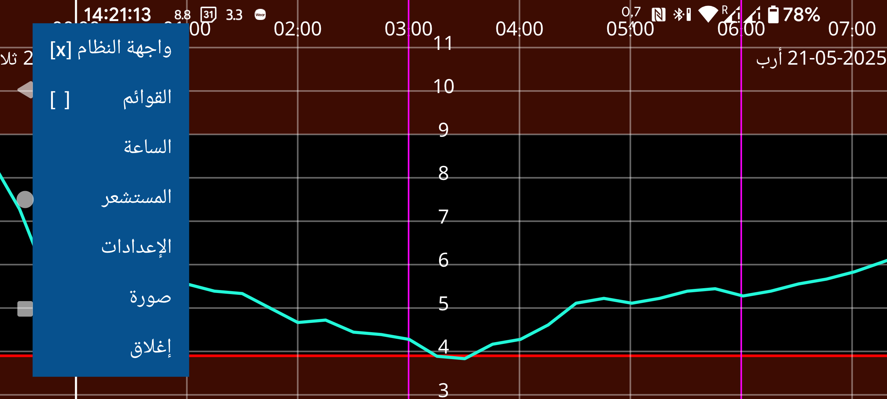
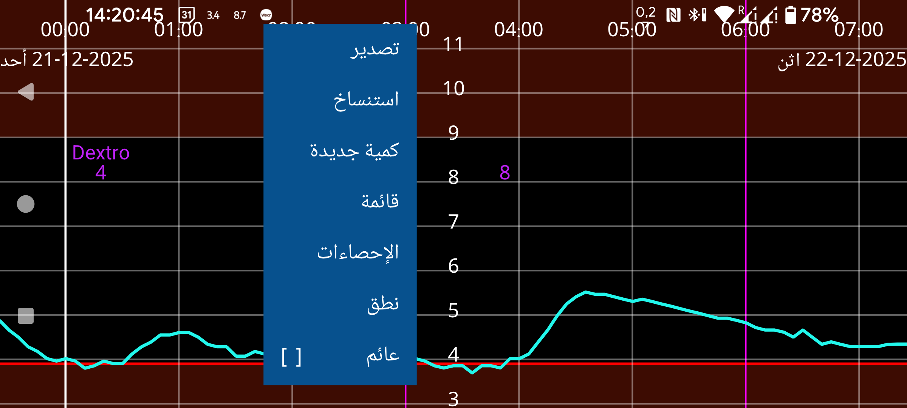
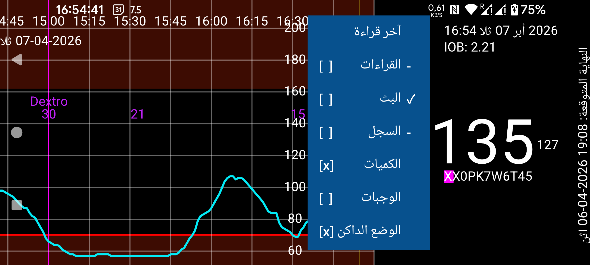
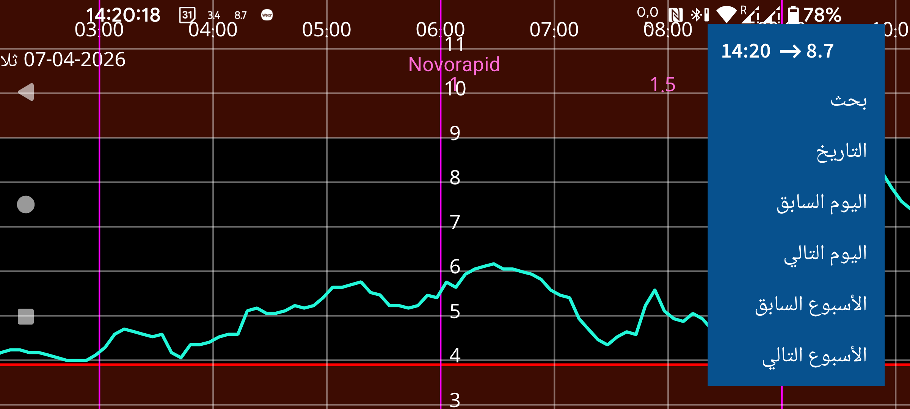

ar be de es fr it nl pl pt ru tr uk zh en
Juggluco هو تطبيق للتحكم في غلوكوز الدم لدى المصابين بالسكري. يمكنه مسح مستشعرات Freestyle Libre (0 و2) عبر NFC، كما يمكنه استقبال قيم الغلوكوز عبر البلوتوث من مستشعرات Freestyle Libre 2 و2+ و3 و3+ وSibionics GS1Sb وDexcom G7/ONE+ وAccu-Chek SmartGuide وCareSens Air وAidex X.
عند تشغيل البرنامج للمرة الأولى، يمكنك مسح مستشعر Freestyle Libre 2 بوضعه قرب مستشعر NFC في هاتفك. بعد ذلك يحاول Juggluco إنشاء اتصال بلوتوث مع مستشعرات Freestyle Libre 2 واستقبال قيمة غلوكوز كل دقيقة من دون مسح. وللاستحواذ على مستشعر FreeStyle Libre 3 أو 3+ الذي فُعِّل بتطبيق Libre 3 من Abbott، يجب إدخال معلومات حساب Libreview التي استخدمتها عند تفعيل المستشعر في الإعدادات->تبادل البيانات->Libreview، ثم الضغط على "الحصول على معرّف الحساب" وانتظار وصول معرّف الحساب قبل المسح. لا يمكن الاستحواذ على مستشعر Libre 3 تم تشغيله بقارئ FreeStyle Libre 3 أو بتطبيق Libre الأمريكي لكل من Libre 2 وLibre 3. ويمكن استخدام جميع المستشعرات المذكورة مع Juggluco ما دامت لم تُفعَّل بتطبيق آخر.
للاتصال بمستشعرات Sibionics GS1Sb أو Dexcom G7/ONE+ أو Accu-Chek SmartGuide أو CareSens Air أو Aidex X، يجب مسح مصفوفة البيانات الخاصة بها عبر القائمة اليسرى->صورة. يتم إقران مستشعرات Dexcom G7/ONE+ عبر البلوتوث، ويجب قبول الإقران على معظم الهواتف بسرعة كبيرة، وإلا ستضطر إلى الانتظار خمس دقائق أخرى. لذلك امنع الشاشة من الانطفاء. في Samsung Galaxy Watch 4 و7 لا تحتاج إلى الموافقة على الإقران. تبقى مستشعرات Dexcom G7/ONE+ المستهلكة نشطة عبر البلوتوث فترة طويلة بعد توقفها عن تسجيل قيم الغلوكوز. ولمنع Juggluco من محاولة الإقران مع المستشعر الخطأ، أبقِ المستشعرات القديمة خارج مدى البلوتوث، مثلًا على بعد 15 مترًا، وخاصة إذا كان للمستشعر القديم رمز PIN نفسه الخاص بالمستشعر الجديد. أوقف التطبيقات والأجهزة التي اتصلت بالمستشعر سابقًا (إيقاف إجباري أو إزالة التثبيت). وأثناء إقران مستشعرات Accu-Chek SmartGuide يجب إدخال رمز PIN.
راجع https://www.juggluco.nl/Juggluco/sensors لمزيد من المعلومات عن الاتصال بالمستشعرات.
يحتوي البرنامج على أربع قوائم. يمكنك فتح قائمة بالضغط على جزء فارغ من الشاشة. الضغط على الربع الأيسر من الشاشة يفتح القائمة اليسرى، والضغط على الجهة اليسرى من الجزء الأوسط يفتح القائمة الثانية، والضغط على الجهة اليمنى من الجزء الأوسط يفتح القائمة الثالثة، أما الربع الأيمن من الشاشة فيفتح القائمة الرابعة.
القائمة 4: التنقّل (يمين)
15:10 ↗ 93 |
التاريخ |
اليوم السابق |
اليوم التالي |
الأسبوع السابق |
الأسبوع التالي |
من خلال التحريك يمينًا ويسارًا على الشاشة يمكنك نقل المنحنى يمينًا ويسارًا. ويمكنك أيضًا التنقّل باستخدام قائمة التنقّل الموجودة على اليمين. استخدم التاريخ لاختيار تاريخ، وبحث للبحث عن قيم الغلوكوز والكميات المُدخلة. والعنصر الأول في القائمة اليمنى هو الوقت الحالي، وباختياره تقفز إلى الجهة اليمنى من الرسم البياني (الآن).
إذا كان خيار الضبط اليدوي لمقياس الغلوكوز مفعّلًا في الإعدادات، فإن التحريك إلى الأعلى أو الأسفل في الجزء العلوي من الشاشة يغيّر الحد الأعلى للرسم البياني، وفي الجزء السفلي يغيّر الحد الأدنى. وإذا كان خيار الضبط اليدوي للوقت مفعّلًا في الإعدادات، فيمكنك زيادة أو تقليل مقدار الوقت الظاهر على الشاشة بتغيير المسافة بين إصبعين.
القائمة 3: العرض
آخر قراءة |
القراءات [x] |
البث [x] |
السجل [x] |
الكميات [x] |
الوجبات [ ] |
الوضع الداكن [x] |
القائمة الوسطى من الجهة اليمنى تحتوي على خيارات العرض. ولمشاهدة آخر قراءة، المس العنصر الأول. وجود علامة × بعد القراءات يعني أن القراءات معروضة في الرسم البياني. القراءة هي قيمة الغلوكوز الحالية التي تحصل عليها عند مسح مستشعر Libre 0 أو 2. كما ينقل المسح أيضًا قياسات كل 15 دقيقة لآخر 8 ساعات من المستشعر إلى الهاتف الذكي. ويمكن التحكم في عرض هذه القيم بلمس السجل. ترسل مستشعرات Libre 3 قيم السجل عبر البلوتوث، وتكون كل 5 دقائق. ويشير البث إلى قيم الغلوكوز التي تُرسَل كل دقيقة عبر البلوتوث من مستشعرات Freestyle Libre 2 و3 إلى هذا التطبيق.
يمكنك إدخال أنواع مختلفة من الكميات، بأي تسمية تريدها، لتوثيق الإنسولين والكربوهيدرات والأنشطة. وتُعرض هذه الكميات على ارتفاع ثابت داخل رسم الغلوكوز البياني في الوقت والتاريخ المحددين. يؤدي لمس النقاط في الرسم البياني أو أي كمية مُدخلة إلى عرض معلومات عن ذلك العنصر. ويمكنك تعديل كمية مُدخلة بلمسة مطوّلة عليها. كما يمكن التعديل أيضًا عبر قائمة الكميات في القائمة الوسطى اليسرى ولمس عنصر البيانات الموافق. يحدد الكميات ما إذا كانت الكميات المُدخلة تُعرض أم لا. وفي الإعدادات يمكنك تحديد التسميات التي تريد استخدامها لهذه الكميات. وفوق إحدى الكميات تُعرض التسمية المقابلة لها.
القائمة 2: يسار الوسط
قائمة |
عائم [ ] |
يمكنك إدخال هذه الكميات بلمس كمية جديدة في القائمة الوسطى اليسرى. يقوم تصدير بحفظ البيانات في ملف بصيغة .tsv (قيم مفصولة بعلامة تبويب). ويتيح استنساخ إرسال البيانات عبر IP/TCP إلى هذا التطبيق عندما يعمل على جهاز آخر لعرض المعلومات نفسها. وتعرض قائمة الكميات المُدخلة. وإذا كان Juggluco قد استقبل ما يكفي من قيم الغلوكوز عبر البلوتوث، فيمكنك مشاهدة بعض الإحصاءات بلمس الإحصاءات. وهي تعرض نسبة القياسات في نطاقات غلوكوز معيّنة، ومؤشر إدارة الغلوكوز (متنبئ HbA1c)، وتذبذب الغلوكوز، ورسمًا بيانيًا ملخّصًا يوضح القيمة التي تقع تحتها 100% و95% و75% و50% و25% و0% من القيم في كل لحظة من اليوم. وفي نطق يمكنك جعل Juggluco ينطق قيم الغلوكوز الواردة أو عناصر الرسم البياني التي تلمسها أو الرسائل. ويقوم عائم بتشغيل الغلوكوز العائم، أي قيمة غلوكوز تظهر فوق التطبيقات الأخرى على الشاشة. وفي الإعدادات يمكنك تغيير لونها وحجمها.
القائمة 1: اليسار
واجهة النظام [ ] |
القوائم [ ] |
صورة |
إغلاق |
في القائمة اليسرى ستجد الإعدادات لتحديد وحدة الغلوكوز mmol/L أو mg/dL، وتعيين التسميات، وضبط تنبيهات الغلوكوز وتذكيرات الدواء ونطاقات العرض. يحدد خيار واجهة النظام ما إذا كانت عناصر تحكم Android وشريط الحالة تُعرض أم لا. وفي الساعة يمكنك ضبط Juggluco لإرسال البيانات إلى أنواع مختلفة من الساعات الذكية. وفي المستشعر يمكنك متابعة كيفية سير الاتصال بالمستشعر. واضغط القوائم لإظهار جميع القوائم المذكورة معًا بطريقة يمكن لـ TalkBack قراءتها. ويمكن استخدام إغلاق للخروج من Juggluco.